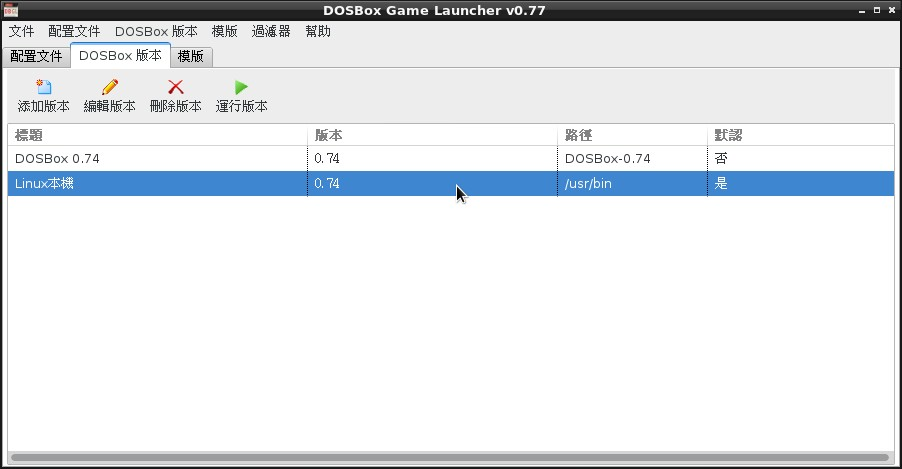

也紀念我們永遠的朋友 李士傑先生（Shih-Chieh Ilya Li）。
DOSBox Game Launcher－－方便玩 Dos 遊戲的前端介面
軟體名稱: DOSBox Game Launcher
介紹版本: 0.77
官網: https://members.quicknet.nl/blankendaalr/dbgl/
授權: GPL-2.0+
喜歡老 DOS 遊戲嗎？
因為 DOSBox 模擬器專案，現在您幾乎想玩任何 DOS 遊戲都不存在技術問題。DOSBox 能夠幾乎百分之百模擬老式的 DOS 機器，讓您愉快玩您的舊遊戲。像我就三天兩頭將 X-COM: UFO Defence 和 Master of Orion II 拿出來玩。
DOSBox 能讓夢想變成現實，但這個現實卻不怎麼方便，因為……你知道的，DOS 是一套基於命令行的作業系統，而 DOSBox 用心模擬出來的自然也是同樣類型的東西。更別說宿主機與模擬機之間需要進行設定與橋接，搞得每次玩個遊戲還要調東調西，mount 來 mount 去，煩都煩死……
為此我們需要一個方便大家玩遊戲的簡單前端。
DosBox 能用的前端不少，好不好用也差距很大。我試用了幾款後，覺得還是本回的主角 DOSBox Game Launcher（以下剪稱 DBGL）最方便好用了。
下載安裝
請前往 DBGL 官網下載。下載位置下方有幾個欄位，Windows、Mac、Linux 都有不同的下載包可抓。下載按鈕下方還有一行簡短的執行方法，都非常簡單，照做即可。
DBGL 是一款 Java 軟體，所以請先預備好 JRE 再執行它。也不需要另行安裝 DOSBox 主程式，DBGL 程式中已有內建。
進入 DBGL 後如果沒有顯示中文介面的話，在【File】→【Preferences】→【General】→【Internationalization】中選擇中文，關閉重啟就能看到全中文化的介面了。中文化程度很完善，推薦使用。
加入遊戲
DBGL 的進入畫面如下：
▲ 圖1：DBGL 啟動後畫面。
畫面中間的空白區域會表列出您設定好的遊戲，想要時只要雙擊就可以玩。當然剛裝好時還空空如也，啥也沒有。
就來設定一下吧。
加入一個已經安裝好的遊戲
假設您擁有一個已經安裝好的 DOS 遊戲資料夾，則 DBGL 的設定程序是非常簡單的。
- 首先，請將您 DOS 遊戲的資料夾，搬到 DBGL 的 dosroot 資料夾底下。
- 點擊【添加配置文件】按鈕。
- 輸入【標題】
- （可選）按右側的【參看 XX】按鈕
- 切換到【裝載設備】頁籤（最後一個頁籤），按右上角處的添加。讓左側出現 mount C "." 的文字。
- 在【主程序】欄位右側按【瀏覽】按鈕，選擇 dos 遊戲的執行檔。
- 按最下面的【確定】按鈕。完成設定。
絕大多數的遊戲這樣設定過後就可以跑了。
請回到原本的主畫面，在新加入的遊戲上面雙擊，或按下右鍵選擇執行。試試看能不能動。
為什麼要把遊戲搬到 dosroot 下？
▲ 圖2：dosroot 是 DBGL 預設的遊戲資料夾放置位置，可放下諸多遊戲。
DBGL 官方強烈建議將所有 DOS 遊戲資料夾安放到 dosroot 資料夾下，這樣能讓 DBGL 得到更強的跨平台能力。簡單說來，將 DBGL 程式移動到不同的資料夾、不同的磁碟、不同的系統時，都無需修改任何現有的遊戲設定。
不過如果您不在意這種可搬移性，DBGL 也能支援其他路徑，但【裝載設備】時，您得自己留意裝載位置是否適當。
抓取 Meta Data？
▲ 圖3：輸入遊戲資料，其中只有遊戲標題是必要且需手動輸入的。一旦您輸入了遊戲標題，其他資料都可以試著按按鈕從網路上抓取看看，看能否自動抓下來。
剛剛提過的【參看 XX】按鈕，可以讓您透過網路上的一些老遊戲網站抓取 DOS 遊戲的 Meta Data。您可以藉此快速設定好各種資訊欄位，像是開發商、發行年代、遊戲簡介與截圖等等。
但是如果是中文遊戲，那就多半抓不到資料，畢竟那些網站都是外國人在寫在收集資料……中文 Meta Data 的大業尚需大家共同努力才行！
那麼，想要玩遊戲，Meta Data 很重要嗎？非得要輸入 Meta Data 才行嗎？
答案為否，對於玩遊戲而言，它並不重要也不必要。您無需強迫自己填入那些空格。嫌煩的話留空就可以了。除了標題是必須的以外，其他資料不影響遊玩，跳過即可。
其他遊玩技巧
以上說明了 DBGL 最簡單的用法，但以下還有一些其他內容可能可以幫上您的忙。
關於不同等級的電腦硬體模擬
玩家可針對不同的遊戲，讓 DOSBox「模擬不同等級的電腦硬體」。
▲ 圖4：設定個別遊戲所採用的 DOS 機器模版。
在「設定遊戲配置文件」的對話盒中，可在【常規】頁籤裡找到「電腦配置模版」，請選擇一個模版，並按下右側的【重新加載配置】按鈕進行確認，以後執行本遊戲時，就會自動套用這組模版的設定。
模版功能可以讓玩家快速地將 DOSBox 模擬為不同的 DOS 機器。它會變動頁籤中的諸多細項，從「執行週期」、「記憶體量」、「CPU 類型」甚至是「顯示模式」都會有影響。
有些遊戲必須要有特定的機器才能執行，如果採用了設計之外的機器，遊戲畫面或速度可能會出現異常，甚至根本無法啟動，此時您就可以透過「模版」來進行快速切換。當然，如果您有著相當程度的技術背景，也可以去個別頁籤中微調機器細部設定，嚐試各種組合，不過這就需要更多知識與測試了。
一般而言模版功能就已經很好用了，要調整機器性能時請優先試試這個。
稍稍提醒一下，玩 DOS 遊戲時並非設備愈先進愈好，適當才是最重要的。
預設模版
▲ 圖5：主畫面模版頁籤。我的預設模版採用了 80486 66Mhz 組態。
您還可以切換到主畫面的模版頁籤，用滑鼠右鍵來指定「預設的模版」究竟要採用哪一個，如此一來，新建立的項目將會直接套用預設模版，而不用逐一手工指定。
您也可以在此設計自己喜歡的專用模版。
手動啟動
DBGL 允許您手動啟動。
▲ 圖6：在項目上按右鍵就能選擇手動啟動。
所謂手動啟動就是說，您可以用您設定的機器參數來啟動 DOSBox，並掛載起所有該掛載的東西，但是偏偏在執行主執行檔之前停下來，讓玩家手動輸入執行指令如 play.exe 來執行遊戲。
這能用在諸如：
- 執行檔有很多，不太確定要執行哪一個，正在嘗試時。
- 需要先執行 SETSOUND.exe 之類的程式幫遊戲設定一下音效卡時。
- 想要除錯時。
……等等比較特殊的狀況下。
雖然是些特殊狀況，不過對於老遊戲來說，不時還是有必要處理一下的。不用去煩那些手動掛載資料夾等無聊前置作業就能立刻開工工作，相當方便順手。
多 DOSBox 版本支持

▲ 圖7：您可以選擇不同的 DOSBox 版本。圖中我把本機安裝的 DOSBox 也加進去了。
針對同一份 DBGL 前端，玩家可以設定多套不同版本的 DOSBox 作為執行遊戲的後端，來因應不同狀況選擇使用。比方說 64 bit 版本與 32 bit 版本可以用在不同的電腦上，而 0.74 版本與 0.73 版本對於少數遊戲的支援狀況也不近相同。適度切換 DOSBox 往往可以幫您解決問題。
您可以把多份 DOSBox 主程式放在 DBGL 資料夾底下，讓任何平台的玩家都能自由選用。（註一）
如果玩家想要用非預設的 DOSBox 版本來執行遊戲，請先在主畫面上對要執行的遊戲按下右鍵，然後選擇不同的 DOSBox 版本來啟動。
遊戲進行時常用的熱鍵
這些熱鍵與 DBGL 無關，是屬於 DOSBox 的，不過為了方便大家參考一併簡列於下：
- Ctrl + F12 機器加速
- Ctrl + F11 機器減速
- Ctrl + F10 滑鼠釋放
- Ctrl + F9 強制關閉程式
- Alt + Enter 切換全螢幕
註解：
註一：關於如何收集各種不同平台及不同版本的 DOSBox 執行檔，其方法多不勝數，但大都相當瑣碎麻煩，此處不細講。
專欄總覽


E-Mail：contact@openfoundry.org Address：台北市南港區研究院路2段128號 中央研究院資訊科學研究所 . 隱私權條款. 使用條款

評論